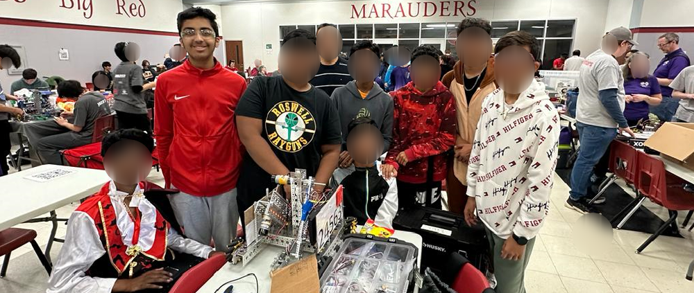

First Tech Challenge (FTC) is a robotics community that prepares young minds for the robotics
programs and various levels of competition. Honestly, it is more than robotics as it teaches me the
importance of STEM, leadership, team work, problem solving and innovation skills.
In middle school, I have founded my robotics team Botz N' Bolts (FTC team #14975) in NJ and in Flower Mound High School I am the captain of team 24563 Flower Mound Firewall. As a team captain, I take individual responsibility to guide my teammates in STEM and conduct outreach programs to educate the community in STEM. Feel free to see my team photos and accomplishments below.